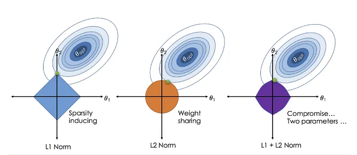

回帰分析
一般的には、回帰分析は統計分析の手法として、変数間の定量的な関係を明らかにすることを目的としている。機械学習の文脈では、回帰は予測や連続的なアウトカムの推定に焦点を当てている。つまり、機械学習においての回帰は、データからパターンを学び、未知のデータや将来のデータに対して予測を行うことを目的としている。本章では、最小二乗法(Ordinary Least Squares, OLS)、リッジ回帰(Ridge Regression)、ラッソ回帰(LASSO)、そしてElastic Net法を含む機械学習の回帰に関するアルゴリズムを紹介する。
線形回帰の基本原理
線形回帰では、特徴量\(x_1, x_2,x_3…, x_n\)から目標値\(y\)を予測します。一般的に次の数式で表されます：\[y = \beta_0 + \beta_1 x_1 + \beta_2 x_2 + \beta_3 x_3 + \ldots + \beta_n x_n + \epsilon \]
ここで、\(\beta_0, \beta_1, \beta_2,\beta_3, \ldots, \beta_n\)はモデルの係数であり、\(\epsilon\)は誤差項を表します。線形回帰の目標は、与えられたデータセットに基づいて、特徴量と目標変数との間の最適な線形関係を定義する係数 \(\beta_0, \beta_1, \beta_2,\beta_3, \ldots, \beta_n\)を推定する。
残差平和和(Residual Sum of Squares, RSS)
解析解と数値計算: 一般的には、機械学習の回帰はGradient Descentでパラメーターを「学習」する
線形回帰の評価指標
- MAE(Mean Squared Error)
過学習
過学習とは、機械学習モデルが訓練データに対して過度に最適化される現象を指します。この状態では、モデルが訓練データのパターンやノイズまで学習してしまい、新しい、未見のデータに対してはうまく一般化できなくなります。
\[ E[y_0-\hat{f}(x_0)]^2=\underset{\text{Variance}}{Var(\hat{x_0})}+\underset{\text{Bias}}{[Bias(\hat{f}(x_0))]^2}+\underset{\text{Irreducible Error}}{Var(\epsilon)} \]
正則化される回帰モデル
